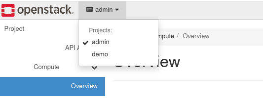
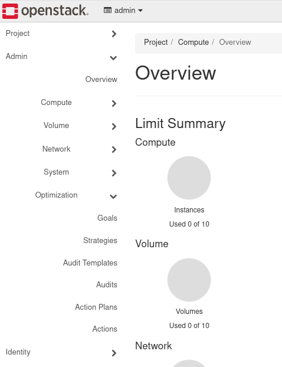
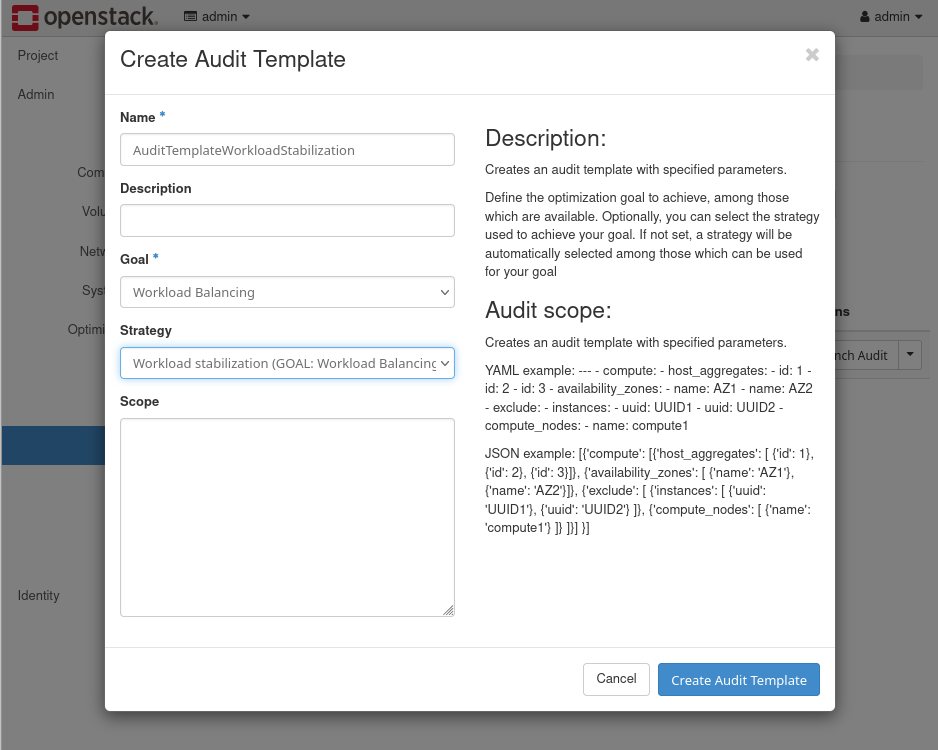
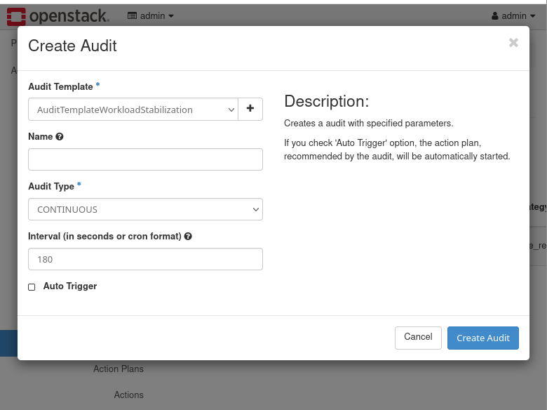
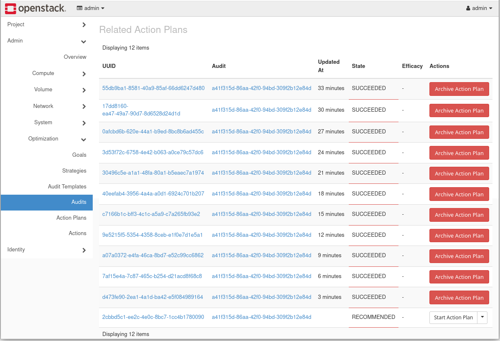
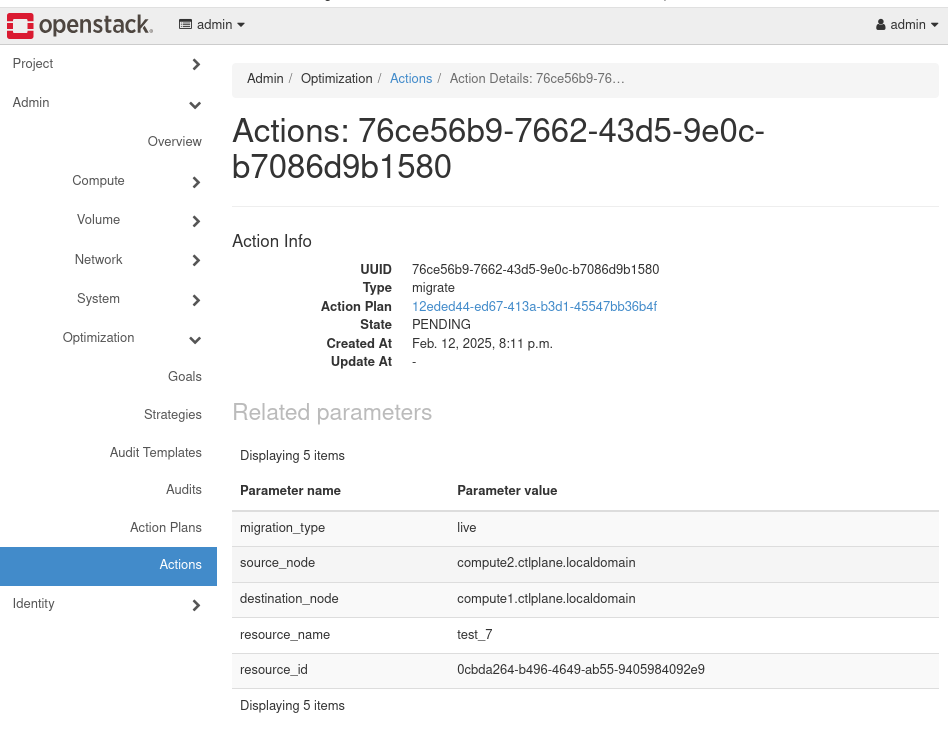
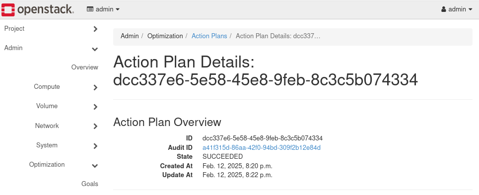

Developer Documentation
The watcher-operator is an OpenShift Operator built using the Operator Framework for Go. The Operator provides a way to install and manage the OpenStack Watcher service on OpenShift. This Operator is developed using RDO containers for OpenStack.
Description
This operator is built using the operator-sdk framework to provide day one and day two lifecycle managment of the OpenStack Watcher service on an OpenShift cluster.
Getting Started
Prerequisites
-
go version v1.22.0+
-
docker version 17.03+.
-
kubectl version v1.11.3+.
-
Access to a Kubernetes v1.11.3+ cluster.
To Deploy on the cluster
Build and push your image to the location specified by IMG:
make docker-build docker-push IMG=<some-registry>/watcher-operator:tagNOTE: This image ought to be published in the personal registry you specified. And it is required to have access to pull the image from the working environment. Make sure you have the proper permission to the registry if the above commands don’t work.
Install the CRDs into the cluster:
make installDeploy the Manager to the cluster with the image specified by IMG:
make deploy IMG=<some-registry>/watcher-operator:tagNOTE: If you encounter RBAC errors, you may need to grant yourself cluster-admin privileges or be logged in as admin.
Create instances of your solution You can apply the samples (examples) from the config/sample:
kubectl apply -k config/samples/NOTE: Ensure that the samples has default values to test it out.
To Uninstall
Delete the instances (CRs) from the cluster:
kubectl delete -k config/samples/Delete the APIs(CRDs) from the cluster:
make uninstallUnDeploy the controller from the cluster:
make undeployTo Deploy via OLM
**Deploy watcher-operator via olm
make watcher**Deply watcher-operator via olm with different catalog image
make watcher CATALOG_IMAGE=<catalog image url with tag>To Deploy watcher service
**Deploy watcher service
make watcher_deployTo Uninstall OLM deployed watcher-operator
**Undeploy watcher service
make watcher_deploy_cleanup**Uninstall watcher-operator
make watcher_cleanupProject Distribution
Following are the steps to build the installer and distribute this project to users.
-
Build the installer for the image built and published in the registry:
make build-installer IMG=<some-registry>/watcher-operator:tag| The makefile target mentioned above generates an install.yaml file in the dist directory. This file contains all the resources built with Kustomize, which are necessary to install this project without its dependencies. |
-
Using the installer
Users can just run kubectl apply -f
kubectl apply -f https://raw.githubusercontent.com/<org>/watcher-operator/<tag or branch>/dist/install.yamlContinuous Integration
This project uses Zuul CI for testing and validation. The CI pipeline includes multiple jobs that test different combinations of OpenStack and Openshift versions, with different configurations.
For a detailed list of all CI jobs and their configuration matrix, please refer to CI README.adoc.
Prow is also used to execute operator functional and pre-commit tests
Contributing
NOTE: Run make help for more information on all potential make targets
More information can be found via the Kubebuilder Documentation
License
Copyright 2024.
Licensed under the Apache License, Version 2.0 (the "License"); you may not use this file except in compliance with the License. You may obtain a copy of the License at
http://www.apache.org/licenses/LICENSE-2.0
Unless required by applicable law or agreed to in writing, software distributed under the License is distributed on an "AS IS" BASIS, WITHOUT WARRANTIES OR CONDITIONS OF ANY KIND, either express or implied. See the License for the specific language governing permissions and limitations under the License.
User Installation Guide
Watcher operator installation
The watcher-operator is now integrated in openstack-operator. The installation of the operator is now part of the installation of the OpenStack Operator. For details about the deployment consult the OpenStack k8s Operators documentation.
Watcher service deployment
The deployment of the Watcher service is performed as part of the OpenStackControlplane Custom Resource. A Watcher service section exist to enable and configure the different aspects of the service.
A default watcher service deployment can be done by just adding following content to your OpenStackControlPlane Custom Resource spec.
watcher:
enabled: trueFor additional details and existing parameters in the watcher service check the WatcherSection and WatcherSpecCore sections of the documentation.
Note: Watcher requires that the OpenStackControlPlane has Telemetry service enabled, including the MetricStorage system which provides the Prometheus backend and metrics required by Watcher.
Example Workflow
This section takes you through two example workflows using Watcher to go through
optimization scenarios. The first workflow, instances consolidation in minimal compute
nodes uses the CLI. The second workflow, workload stabilization,
uses Horizon UI and Prometheus metrics dashboards.
Requirements
The example requires that the following setup is in place:
-
An OpenStack operators-based deployment with two or more Compute nodes
-
Nova Live migration is functional on your environment
-
Watcher has been deployed following the instructions in the User Installation Guide
-
Instances (Virtual Machines) have been created on the Compute nodes
Test instances can be created using the deploy-instance-demo.sh script:
#!/bin/bash
#
# Copyright 2025 Red Hat Inc.
#
# Licensed under the Apache License, Version 2.0 (the "License"); you may
# not use this file except in compliance with the License. You may obtain
# a copy of the License at
#
# http://www.apache.org/licenses/LICENSE-2.0
#
# Unless required by applicable law or agreed to in writing, software
# distributed under the License is distributed on an "AS IS" BASIS, WITHOUT
# WARRANTIES OR CONDITIONS OF ANY KIND, either express or implied. See the
# License for the specific language governing permissions and limitations
# under the License.
#
#
# Instructions to delete what is created in demo project
#
# oc rsh openstackclient
# unset OS_CLOUD
# . ./demorc
# openstack server delete test_0
# If more that one were created, delete them
# openstack router delete priv_router
# openstack subnet delete priv_sub_demo
# openstack network delete private_demo
# openstack security group delete basic
# openstack image delete cirros
# export OS_CLOUD=default
# openstack project delete demo
#
set -ex
# Create Image
IMG=cirros-0.5.2-x86_64-disk.img
URL=http://download.cirros-cloud.net/0.5.2/$IMG
DISK_FORMAT=qcow2
RAW=$IMG
NUMBER_OF_INSTANCES=${1:-1}
openstack project show demo || \
openstack project create demo
openstack role add --user admin --project demo member
openstack network show public || openstack network create public --external --provider-network-type flat --provider-physical-network datacentre
openstack subnet show public_subnet || openstack subnet create public_subnet --subnet-range <PUBLIC SUBNET CIDR> --allocation-pool start=<START PUBLIC SUBNET ADDRESSES RANGE>,end=<END PUBLIC SUBNET ADDRESSES RANGE> --gateway <PUBLIC NETWORK GATEWAY IP> --dhcp --network public
# Create flavor
openstack flavor show m1.small || \
openstack flavor create --ram 512 --vcpus 1 --disk 1 --ephemeral 1 m1.small
# Use the demo project from now on
unset OS_CLOUD
cp cloudrc demorc
sed -i 's/OS_PROJECT_NAME=admin/OS_PROJECT_NAME=demo/' demorc
. ./demorc
curl -L -# $URL > /tmp/$IMG
if type qemu-img >/dev/null 2>&1; then
RAW=$(echo $IMG | sed s/img/raw/g)
qemu-img convert -f qcow2 -O raw /tmp/$IMG /tmp/$RAW
DISK_FORMAT=raw
fi
openstack image show cirros || \
openstack image create --container-format bare --disk-format $DISK_FORMAT cirros < /tmp/$RAW
# Create networks
openstack network show private_demo || openstack network create private_demo
openstack subnet show priv_sub_demo || openstack subnet create priv_sub_demo --subnet-range 192.168.0.0/24 --network private_demo
openstack router show priv_router || {
openstack router create priv_router
openstack router add subnet priv_router priv_sub_demo
openstack router set priv_router --external-gateway public
}
# Create security group and icmp/ssh rules
openstack security group show basic || {
openstack security group create basic
openstack security group rule create basic --protocol icmp --ingress --icmp-type -1
openstack security group rule create basic --protocol tcp --ingress --dst-port 22
}
# Create an instance
for (( i=0; i<${NUMBER_OF_INSTANCES}; i++ )); do
NAME=test_${i}
openstack server show ${NAME} || {
openstack server create --flavor m1.small --image cirros --nic net-id=private_demo ${NAME} --security-group basic --wait
fip=$(openstack floating ip create public -f value -c floating_ip_address)
openstack server add floating ip ${NAME} $fip
}
openstack server list --long
doneand modifying the script for your environment and deploy test instances as shown with the example commands below:
# Modify the openstack subnet create public_subnet command options
# to your particular environment.
# This example uses 8 instances.
# Adjust the number per the number of instances to be used
# in the test environment
oc cp deploy-instance-demo.sh openstackclient:/home/cloud-admin
oc rsh openstackclient bash /home/cloud-admin/deploy-instance-demo.sh 8You can check which hosts the VMs have been deployed on using the --long option
on the openstack server list command:
$ oc rsh openstackclient openstack server list --project demo \
--long -c 'Name' -c 'Status' -c 'Host'
+--------+--------+-------------------------------+
| Name | Status | Host |
+--------+--------+-------------------------------+
| test_7 | ACTIVE | compute1.ctlplane.localdomain |
| test_6 | ACTIVE | compute2.ctlplane.localdomain |
| test_5 | ACTIVE | compute1.ctlplane.localdomain |
| test_4 | ACTIVE | compute2.ctlplane.localdomain |
| test_3 | ACTIVE | compute1.ctlplane.localdomain |
| test_2 | ACTIVE | compute2.ctlplane.localdomain |
| test_1 | ACTIVE | compute1.ctlplane.localdomain |
| test_0 | ACTIVE | compute1.ctlplane.localdomain |
+--------+--------+-------------------------------+Watcher Workflow (CLI)
Optimization Scenario I: Instances Consolidation in Minimal Compute Nodes
Information on the Watcher Strategies is available in the Openstack documentation. The server consolidation strategy is explained in the strategies documentation.
The steps below are all executed from the openstackclient pod.
Run oc rsh openstackclient to access the openstackclient pod before beginning the workflow steps.
-
Create the
Audit Template$ openstack optimize audittemplate create -s node_resource_consolidation \ AuditTemplateNodeConsolidation server_consolidation +-------------+--------------------------------------+ | Field | Value | +-------------+--------------------------------------+ | UUID | 4b80a46d-d6e3-401a-a615-d8d1d5c3ec1b | | Created At | 2025-02-11T16:16:54.797663+00:00 | | Updated At | None | | Deleted At | None | | Description | None | | Name | AuditTemplateNodeConsolidation | | Goal | server_consolidation | | Strategy | node_resource_consolidation | | Audit Scope | [] | +-------------+--------------------------------------+Check that
Audit Templatehas been created with:$ openstack optimize audittemplate list -c 'UUID' -c 'Goal' -c 'Strategy' +--------------------------------------+----------------------+-----------------------------+ | UUID | Goal | Strategy | +--------------------------------------+----------------------+-----------------------------+ | 4b80a46d-d6e3-401a-a615-d8d1d5c3ec1b | server_consolidation | node_resource_consolidation | +--------------------------------------+----------------------+-----------------------------+ -
Now create the Audit
$ openstack optimize audit create -a AuditTemplateNodeConsolidation -t ONESHOT \ --name node_server_consolidation-PoC +---------------+--------------------------------------+ | Field | Value | +---------------+--------------------------------------+ | UUID | 19ae8e21-3185-4366-96e3-ed04184234e8 | | Name | node_server_consolidation-PoC | | Created At | 2025-02-11T16:19:41.454788+00:00 | | Updated At | None | | Deleted At | None | | State | PENDING | | Audit Type | ONESHOT | | Parameters | {'host_choice': 'auto'} | | Interval | None | | Goal | server_consolidation | | Strategy | node_resource_consolidation | | Audit Scope | [] | | Auto Trigger | False | | Next Run Time | None | | Hostname | None | | Start Time | None | | End Time | None | | Force | False | +---------------+--------------------------------------+Verify the
Auditwas created with the command below:$ openstack optimize audit list -c 'UUID' -c 'Name' -c 'Audit Type' -c 'State' +--------------------------------------+-------------------------------+------------+-----------+ | UUID | Name | Audit Type | State | +--------------------------------------+-------------------------------+------------+-----------+ | 19ae8e21-3185-4366-96e3-ed04184234e8 | node_server_consolidation-PoC | ONESHOT | SUCCEEDED | +--------------------------------------+-------------------------------+------------+-----------+Note that you are looking for the
Stateto showSUCCEEDED. -
Now check the
Action Plan$ openstack optimize actionplan list -c 'UUID' -c 'State' -c 'Global efficacy' +--------------------------------------+-------------+-------------------------------+ | UUID | State | Global efficacy | +--------------------------------------+-------------+-------------------------------+ | dfdcb491-89c5-4c07-a5ed-65d2085c488c | RECOMMENDED | Released_nodes_ratio: 50.00 % | | | | | +--------------------------------------+-------------+-------------------------------+Note that the
StateisRECOMMENDEDand theGlobal efficacyshowsReleased_nodes_ratio: 50.00 %. This indicates that implementing this Action Plan will empty 50% of the Compute nodes. -
List the actions inside this
Action Plan# dfdcb491-89c5-4c07-a5ed-65d2085c488c is the UUID of the Action Plan $ openstack optimize action list --action-plan dfdcb491-89c5-4c07-a5ed-65d2085c488c \ -c 'UUID' -c 'State' -c 'Action' +--------------------------------------+-----------+---------------------------+ | UUID | State | Action | +--------------------------------------+-----------+---------------------------+ | 01774d02-00a9-4f34-a6f7-6b2264b8970c | PENDING | change_nova_service_state | | 8573aa4e-6fac-4002-8de6-569e72d4dca3 | PENDING | migrate | | 6d88ea4a-012b-4cb8-af86-8e699c6c2738 | PENDING | migrate | | fa2827c6-78f8-48b8-8f8a-734b9f170841 | PENDING | migrate | | 4009c44d-9af6-4a6e-91dd-96bd4f17abd5 | PENDING | migrate | | e3dc2dec-74fc-4f16-b76d-c4b99acb1b01 | PENDING | change_nova_service_state | +--------------------------------------+-----------+---------------------------+Listed above you will see that the
Action Planhas 5 actions. You can see the details of eachActionwith using with:$ openstack optimize action show < Action UUID >.$ openstack optimize action show 8573aa4e-6fac-4002-8de6-569e72d4dca3 \ --max-width=72 +-------------+--------------------------------------------------------+ | Field | Value | +-------------+--------------------------------------------------------+ | UUID | 8573aa4e-6fac-4002-8de6-569e72d4dca3 | | Created At | 2025-02-11T16:19:44+00:00 | | Updated At | None | | Deleted At | None | | Parents | ['01774d02-00a9-4f34-a6f7-6b2264b8970c'] | | State | PENDING | | Action Plan | dfdcb491-89c5-4c07-a5ed-65d2085c488c | | Action | migrate | | Parameters | {'migration_type': 'live', 'source_node': | | | 'compute1.ctlplane.localdomain', 'resource_name': | | | 'test_7', 'resource_id': | | | '0cbda264-b496-4649-ab55-9405984092e9'} | | Description | Moving a VM instance from source_node to | | | destination_node | +-------------+--------------------------------------------------------+In this example, the
Action Planis disabling the Compute node which is going to be freed, then it will migrate the three instances running on it, and finally it will enable the Compute node again to make sure it is available for new workloads if needed. -
Now you are ready to execute
Action Planusing the command:$ openstack optimize actionplan start <Action Plan UUID>.$ openstack optimize actionplan start dfdcb491-89c5-4c07-a5ed-65d2085c488c \ --max-width=72 +---------------------+------------------------------------------------+ | Field | Value | +---------------------+------------------------------------------------+ | UUID | dfdcb491-89c5-4c07-a5ed-65d2085c488c | | Created At | 2025-02-11T16:19:44+00:00 | | Updated At | 2025-02-11T16:38:36+00:00 | | Deleted At | None | | Audit | 19ae8e21-3185-4366-96e3-ed04184234e8 | | Strategy | node_resource_consolidation | | State | PENDING | | Efficacy indicators | [{'name': 'compute_nodes_count', | | | 'description': 'The total number of enabled | | | compute nodes.', 'unit': None, 'value': 2.0}, | | | {'name': 'released_compute_nodes_count', | | | 'description': 'The number of compute nodes | | | to be released.', 'unit': None, 'value': 1.0}, | | | {'name': 'instance_migrations_count', | | | 'description': 'The number of VM migrations | | |to be performed.', 'unit': None, 'value': 4.0}] | | Global efficacy | [{'name': 'released_nodes_ratio', | | | 'description': 'Ratio of released compute | | | nodes divided by the total number of enabled | | | compute nodes.', 'unit': '%', 'value': 50.0}] | | Hostname | None | +---------------------+------------------------------------------------+ -
Finally, you can monitor the
Action Planprogress and check the results. You can track the status of each action in the plan with:$ openstack optimize action list --action-plan <Action Plan UUID>. After some time, all the actions should reportSUCCEEDEDstate as shown in an example below:$ openstack optimize action list --action-plan dfdcb491-89c5-4c07-a5ed-65d2085c488c \ -c 'UUID' -c 'State' -c 'Action' +--------------------------------------+-----------+---------------------------+ | UUID | State | Action | +--------------------------------------+-----------+---------------------------+ | 01774d02-00a9-4f34-a6f7-6b2264b8970c | SUCCEEDED | change_nova_service_state | | 8573aa4e-6fac-4002-8de6-569e72d4dca3 | SUCCEEDED | migrate | | 6d88ea4a-012b-4cb8-af86-8e699c6c2738 | SUCCEEDED | migrate | | fa2827c6-78f8-48b8-8f8a-734b9f170841 | SUCCEEDED | migrate | | 4009c44d-9af6-4a6e-91dd-96bd4f17abd5 | SUCCEEDED | migrate | | e3dc2dec-74fc-4f16-b76d-c4b99acb1b01 | SUCCEEDED | change_nova_service_state | +--------------------------------------+-----------+---------------------------You can check that the instances have been actually consolidated in one of your hosts by listing the instances (VMs) on each one of your hypervisors.
# List the hypervisors: $ openstack hypervisor list -c 'Hypervisor Hostname' -c 'State' +-------------------------------+-------+ | Hypervisor Hostname | State | +-------------------------------+-------+ | compute2.ctlplane.localdomain | up | | compute1.ctlplane.localdomain | up | +-------------------------------+-------+ + # Note that the output below lists all instances on one host: $ openstack server list --long -c Name -c 'Host' --project demo +--------+-------------------------------+ | Name | Host | +--------+-------------------------------+ | test_7 | compute2.ctlplane.localdomain | | test_6 | compute2.ctlplane.localdomain | | test_5 | compute2.ctlplane.localdomain | | test_4 | compute2.ctlplane.localdomain | | test_3 | compute2.ctlplane.localdomain | | test_2 | compute2.ctlplane.localdomain | | test_1 | compute2.ctlplane.localdomain | | test_0 | compute2.ctlplane.localdomain | +--------+-------------------------------+
Watcher Workflow (Horizon Dashboard UI)
Optimization Scenario II: Workload balancing/stabilization
This workflow is demonstrated through actions in the Horizon UI.
Example screenshots are added where necessary to further explain the user flow.
-
Login in the
Horizondashboard with credentials which would enable theAdminrole in one or more projects. -
Make sure you have the
Administrationmenu enabled by selecting the project where you have theAdminrole assigned in the Projects tab: -
In the Admin menu a new panel
Optimizationshould be available: -
In the
Audit Templatespanel, click onCreate Templatebutton. This will open aCreate Audit Templatewindow. Add a newAudit Templatecalled AuditTemplateWorkloadStabilization with the goal Workload Balancing and the Strategy Workload stabilization. Further information on theWorkload stabilizationstrategy is available in the Workload stabilization strategy reference. -
In the
Auditpanel, click on the Create Audit button. This will bring up theCreate Auditwindow. Select the AuditTemplateWorkloadStabilizationAudit Template, the CONTINUOUSAudit Type. In the Interval field, set the value to 180.Click on the Create Audit button and a new
Auditwill be shown. -
Click on the UUID of the
Auditlisted and you will find theAction Planscreated for the new Audit. Given the low usage of resources in the instances created for the example workflows, the initialAction Planwill not have real actions. -
Increase CPU consumption in one of the created instances (VMs). You can view the list of instances in
Horizonby selecting the Instances panel from the menus: Admin → Compute → Instances. Click on the name of one of the instances, and go to the Console tab for that instance. Log in withcirrosuser and thegocubsgopassword, and run following command:$ dd if=/dev/random of=/dev/nullAfter a few minutes, the CPU usage of the edited instance should increase up to close to 100%. This increase will be seen in the instance metrics show in the Prometheus metrics URL.
-
Go back to
Auditpanel by through menu options: Admin → Optimization → Audit. Click on the UUID of the continuousAudit. The next execution of theAuditshould generate a non-emptyAction Planwith a RECOMMENDED status. Depending on specific resources, it may take one or two executions of theAuditto create this non-empty plan. -
Click on the RECOMMENDED
Action Plan, there should be a MigrateActionlisted. Click on theActionto see the related details. The resource_name field should match name of the instance where you logged in and ran theddcommand. -
Go back to the list of
Action Plans, and click the Start Action Plan button for the RECOMMENDED plan. Click on theAction PlanUUID to track the status until it goes to SUCCEEDED. -
Check the distribution of the test instances over the hosts using the
openstack server list --longcommand. You should see that the instance where the load was increased, has moved.$ openstack server list --long -c Name -c 'Host' --project demo +--------+-------------------------------+ | Name | Host | +--------+-------------------------------+ | test_7 | compute1.ctlplane.localdomain | | test_6 | compute2.ctlplane.localdomain | | test_5 | compute2.ctlplane.localdomain | | test_4 | compute2.ctlplane.localdomain | | test_3 | compute2.ctlplane.localdomain | | test_2 | compute2.ctlplane.localdomain | | test_1 | compute2.ctlplane.localdomain | | test_0 | compute2.ctlplane.localdomain | +--------+-------------------------------+ -
Stop the CONTINUOUS
Auditfrom theAuditspanel and select Cancel Action. If this option is not available fromHorizonin your environment, you can execute it using the CLI:$ openstack optimize audit update <audit uuid> replace state=CANCELLED